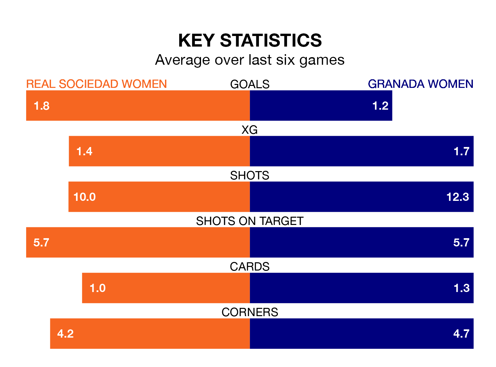

Struggling Granada Women face Real Sociedad Women away at Instalaciones de Zubieta on Sunday looking to build on a win in their last league outing.
After securing all three points with a 2-0 victory over Athletic Club Women on February 3, Granada sit 15th in Liga F.
They travel to play a Sociedad Women side seventh in the standings, who also won their last match, 2-0 against Eibar Women, on February 4.
With 14 goals in 16 games so far this season, Granada are scoring at below the league average rate with 0.9 goals per game. And they are conceding more than average, letting in 30 goals at a rate of 1.9 per game.
Sociedad Women are also below average scorers, with 1.5 goals per game, compared to a league average of 1.6. They have conceded 1.6 goals per game.
In Synne Jensen, the home side have one of the league's sharpest shooters so far this season. She has notched 10 goals in 16 appearances, to sit fourth in the scoring charts.
Her goal rate of one every 120 minutes is much quicker than that of Edna Imade, the visitors' top scorer with a goal every 247 minutes, and a total of three goals in 15 games.
Sociedad Women are in reasonable form in Liga F, with three wins and three draws from their last six games.
With two wins and a draw over that period, Granada's form is worse – they have taken seven points from 18, compared to Sociedad Women's 12.
Updated: 11:43 (UTC), 08/02/24